1 / 1
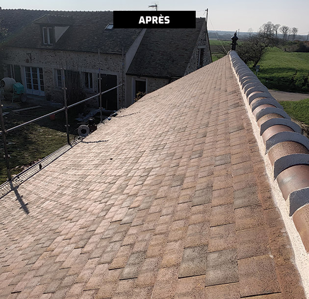
Couverture, zinguerie, isolation, rénovation complète — chaque projet traité avec la rigueur d'un artisan passionné.
De la rénovation à la construction neuve, maîtrise complète de tous types de toitures.
Pose et rénovation de tous types de toitures : tuiles, ardoises, zinc, bac acier. Travail soigné, matériaux garantis.
Diagnostic complet, dépose, traitement, refaçonnage des rives et faîtages. Votre toiture comme neuve avec garantie décennale.
Isolation par l'extérieur (sarking) ou par l'intérieur. Réduisez vos factures jusqu'à 30 %. Éligible aux aides MaPrimeRénov'.
Pose et remplacement de chéneaux, gouttières, solins, noues. Étanchéité irréprochable pour protéger votre bâtiment.
Intervention rapide 7j/7 en cas de fuite, tuile cassée, infiltration. Bâchage d'urgence et réparation durable en 24 h.
Nettoyage haute pression, traitement anti-mousse, hydrofugation. Prolongez la durée de vie de votre toiture à moindre coût.
Cliquez sur une photo pour l'agrandir et lire le détail du chantier.
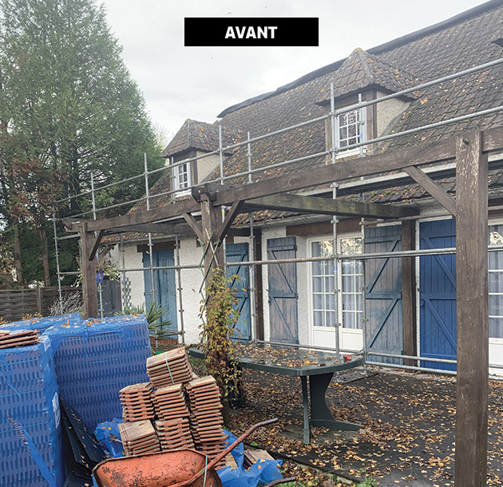
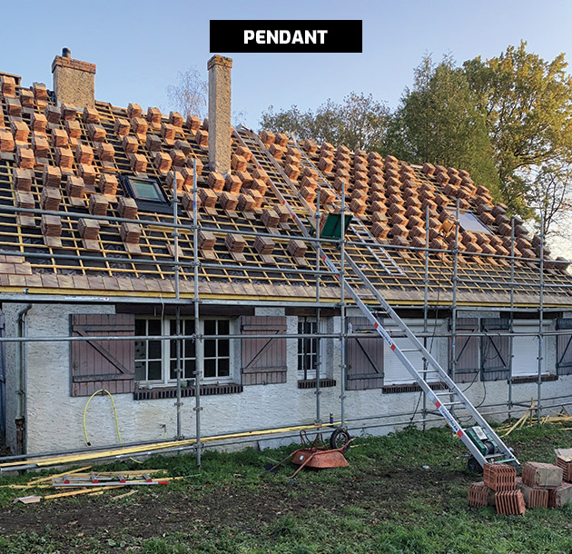
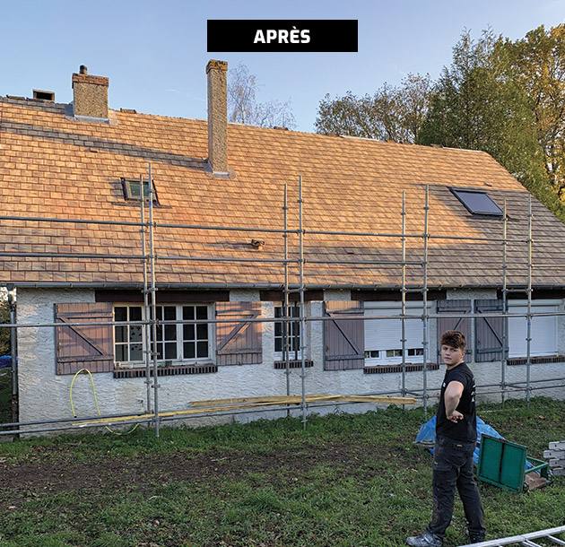
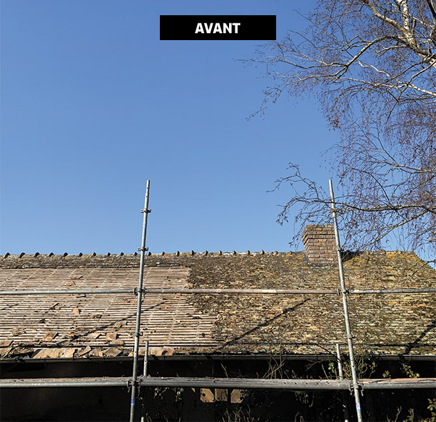
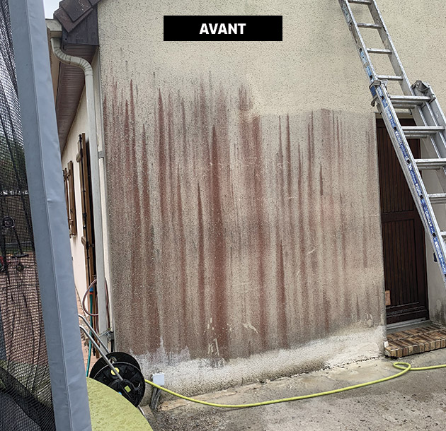
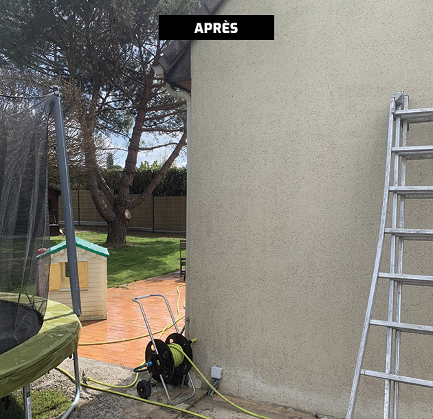
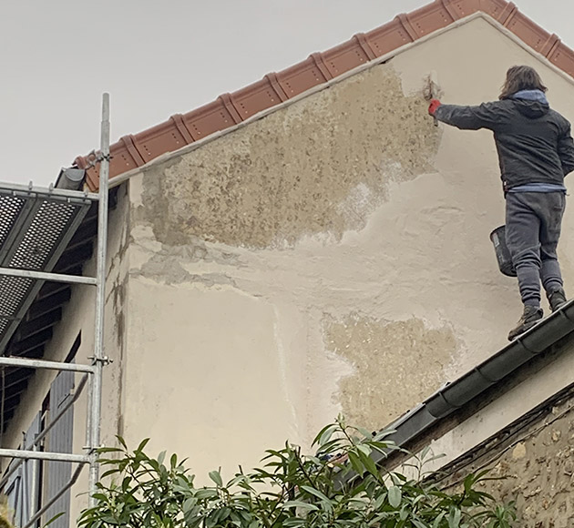
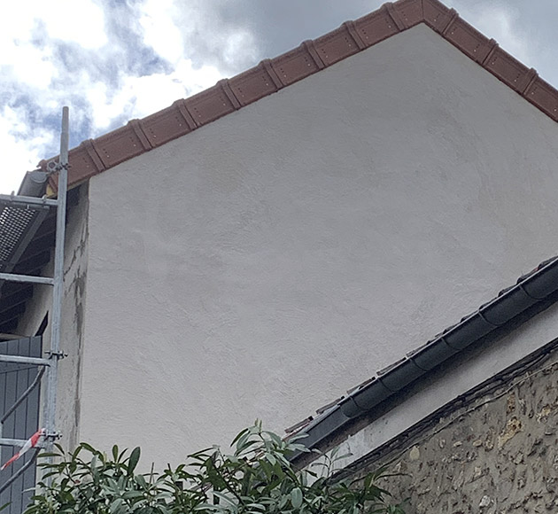
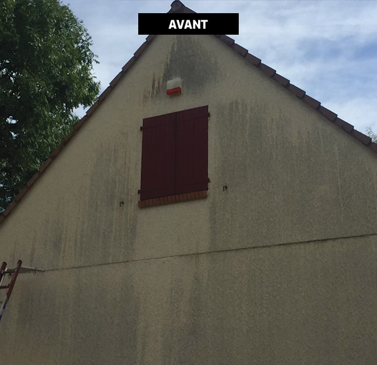
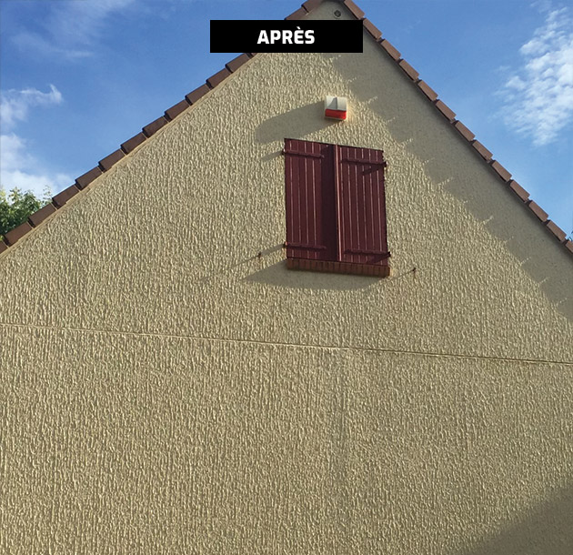
Artisan indépendant certifié RGE, nous intervenons sans sous-traitance. Chaque chantier est suivi personnellement par notre équipe — du diagnostic à la livraison.
N° 7711 — Couverture & Zinguerie
Glissez la ligne pour révéler la transformation.

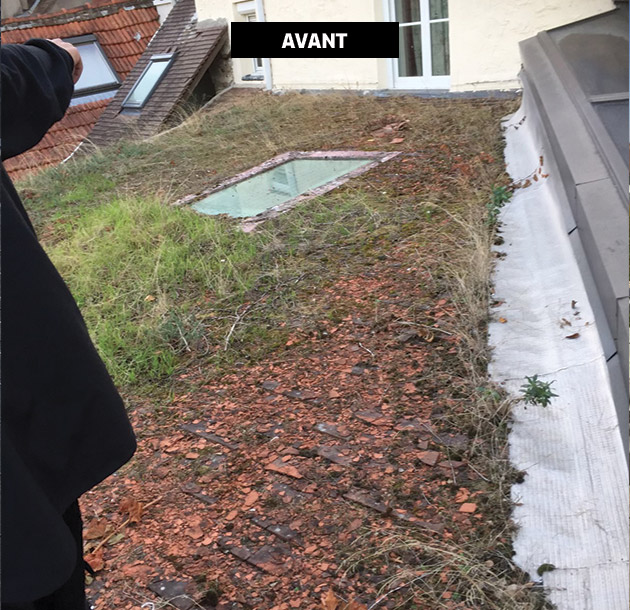
Conditions météo en temps réel dans votre région, alertes tempête incluses.
Nous intervenons dans un rayon de 80 km autour de notre siège à Versailles.
« Intervention rapide suite à une fuite. Diagnostic précis, réparation soignée. Équipe sérieuse et propre. Je recommande vivement. »
« Rénovation complète de ma toiture en ardoise. Travail impeccable, prix honnête, respect des délais. Merci à toute l'équipe ! »
« Devis clair, explication détaillée des travaux. Résultat au-delà de mes attentes. Mon toit est comme neuf après 40 ans. »
« Isolation sarking réalisée proprement, en une semaine chrono. Économies d'énergie constatées dès le premier hiver. »
« Nettoyage et hydrofugation de qualité professionnelle. Très content du résultat, la mousse n'a pas repoussé depuis 2 ans. »
« Intervention rapide suite à une fuite. Diagnostic précis, réparation soignée. Équipe sérieuse et propre. Je recommande vivement. »
« Rénovation complète de ma toiture en ardoise. Travail impeccable, prix honnête, respect des délais. Merci à toute l'équipe ! »
Remplissez le formulaire ou contactez-nous directement. Réponse garantie sous 48 h.
Nous vous recontacterons dans les 48 heures.